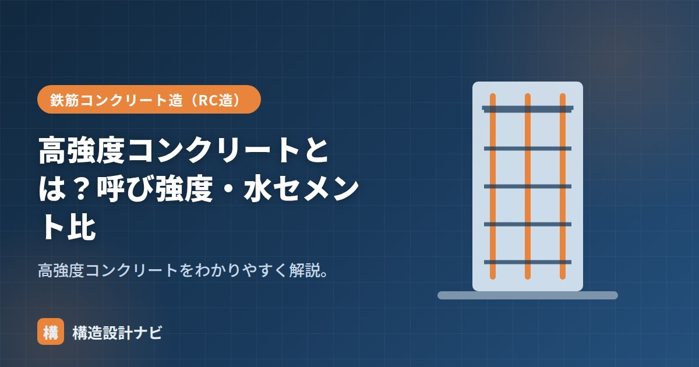

高強度コンクリートとは？呼び強度・水セメント比

高強度コンクリートとは、一般的なコンクリートより設計基準強度（Fc）が高いコンクリートのことです。同じ断面積でもより大きな軸力・応力に耐えられるため、超高層ビルの柱など、大きな力がかかる部材に使われます。強度を高めるには水セメント比を下げる必要があり、それに伴って流動性や施工性、材料コストも変わってくるため、設計・施工の両面で普通コンクリートとは異なる配慮が求められます。
- 高強度コンクリートは設計基準強度Fcが高いコンクリート（目安Fc>36N/mm²）
- 強度は水セメント比（W/C）でほぼ決まり、W/Cを下げるほど高強度になる
- 超高層ビルの下層階の柱など、大きな軸力を負担する部材に使われる
意味
明確な境界は規準により異なりますが、JASS5ではおおむね設計基準強度Fcが36N/mm²を超える範囲を高強度コンクリートとして扱います。さらに高い60N/mm²超などは、大臣認定材料として扱われることもあります。英語ではhigh-strength concreteと呼ばれ、海外でも超高層建築や特殊構造物で広く採用されている材料です。
呼び強度とJIS
レディーミクストコンクリート（生コン）はJIS A 5308で規格化され、強度は「呼び強度」で発注します。JISの呼び強度は一定の範囲（おおむね～60程度）まで定められ、それを超える超高強度は認定品などで対応します。呼び強度は工場出荷時の管理値であり、設計基準強度Fcとは考え方が異なるため、発注時には両者の対応関係を生コン工場と事前にすり合わせておくことが重要です。
水セメント比で強度を高める
コンクリートの強度は水セメント比（W/C）でほぼ決まり、W/Cが小さいほど高強度になります。普通コンクリートのW/Cが50〜65%程度なのに対し、高強度では30〜40%程度まで下げます。水を減らすと固くなるため、高性能AE減水材で流動性を確保します。
例えば単位水量が160kg/m³、単位セメント量が400kg/m³であれば、水セメント比は160÷400＝40%です。同じ単位水量でセメント量を増やす（または水量を減らす）ほどW/Cは下がり、理論上は強度が高くなります。ただしセメント量を増やしすぎると水和熱によるひび割れリスクが高まるため、混和材の使用など総合的な配合設計が必要です。
施工上の注意点
高強度コンクリートはW/Cが小さく粘性が高いため、普通コンクリートと同じ感覚で打設すると充填不良・コールドジョイントが生じやすくなります。高性能AE減水材による流動性確保に加え、締固め（バイブレーター）の入念な管理や、打重ね時間の短縮など、施工計画の段階から配慮することが求められます。
高強度コンクリートは水和熱が大きくなりやすく、部材断面が大きい場合はマスコンクリートと同様の温度ひび割れ対策（養生・配合の工夫）が必要になることがあります。
用途
- 超高層ビルの下層階の柱（大きな軸力を負担）。
- 大スパン・大荷重の部材。
- 柱断面を小さくして有効面積を広げたい場合。
Q1. 高強度コンクリートは普通コンクリートより高価ですか。
一般に材料費（セメント量・混和材）や品質管理コストがかかるため、普通コンクリートより高価になる傾向があります。ただし柱断面を小さくできることで、鉄筋量や型枠費用が抑えられ、トータルコストで有利になる場合もあります。
Q2. 高強度コンクリートを使うと柱は必ず小さくできますか。
軸力に対する断面は小さくできる可能性がありますが、剛性（変形のしにくさ）やせん断・付着など他の検討項目によって断面が決まる場合もあり、強度だけで断面が自動的に小さくなるとは限りません。
打設計画を立てるとき、高強度コンクリートは強度計算上の断面だけでなく、締固めのしやすさまで考えないと現場で痛い目を見ます。W/Cを下げた分だけ粘性が上がるため、打重ね時間や締固め計画を施工者と事前にすり合わせるようにしています。
流動性確保の「高流動コンクリートと高性能AE減水材」、標準の「普通コンクリート」、全体像は「コンクリートの種類7選」をどうぞ。
まとめ
- 高強度コンクリートは設計基準強度が高いコンクリート（おおむねFc>36N/mm²）。
- 生コンはJIS A 5308で呼び強度により発注。超高強度は認定品で対応。
- 強度は水セメント比で決まり、W/Cを下げて高強度化する。
- 粘性が高く水和熱も大きいため、施工計画・養生の配慮が必要。